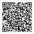

Pix
Escaneie o QR Code ou use uma das opções de cópia.

Chave Pix · e-mail
contato@drajoyceradis.com
APOIO AO PROJETO
O projeto é gratuito e open source. Se ele foi útil para você, contribua com a coleta e o processamento de dados, a manutenção e o desenvolvimento.
Escaneie o QR Code ou use uma das opções de cópia.

contato@drajoyceradis.com
Prefere apoiar o desenvolvimento open source pelo GitHub? O perfil Sponsors da mantenedora está ativo.
Independência preservada. Apoio financeiro não interfere em candidaturas, fontes, metodologia, ordem ou apresentação dos dados.